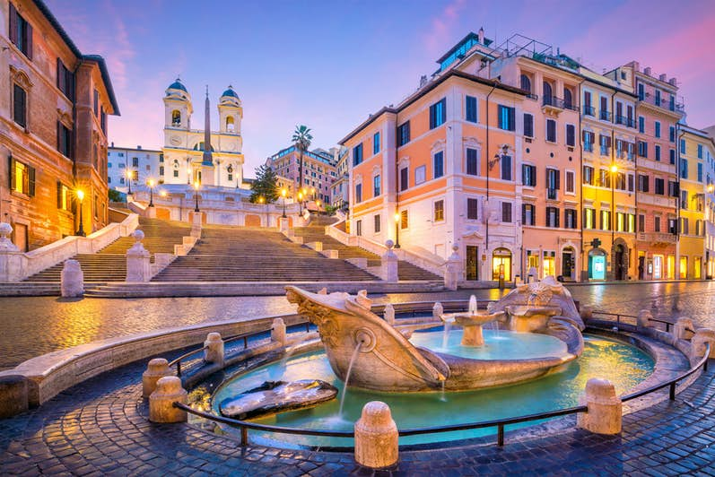
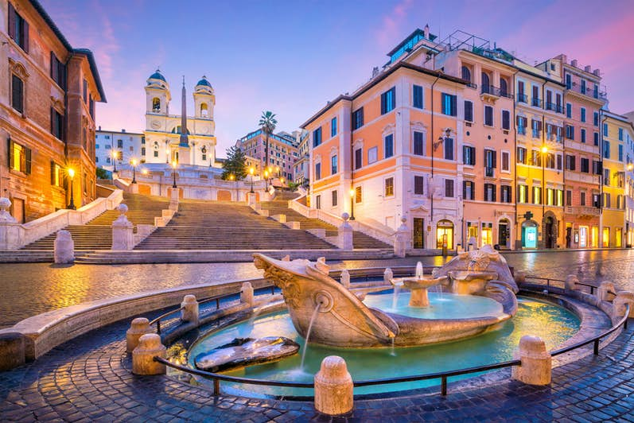
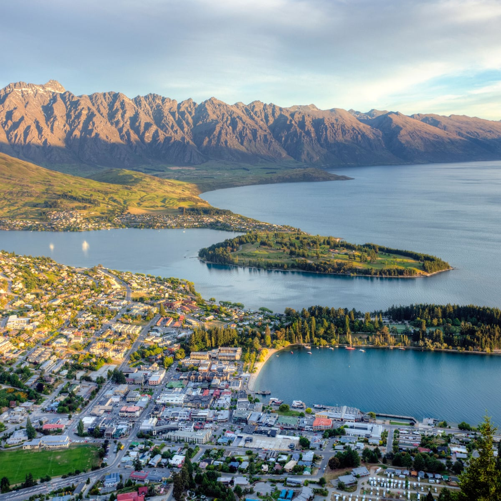
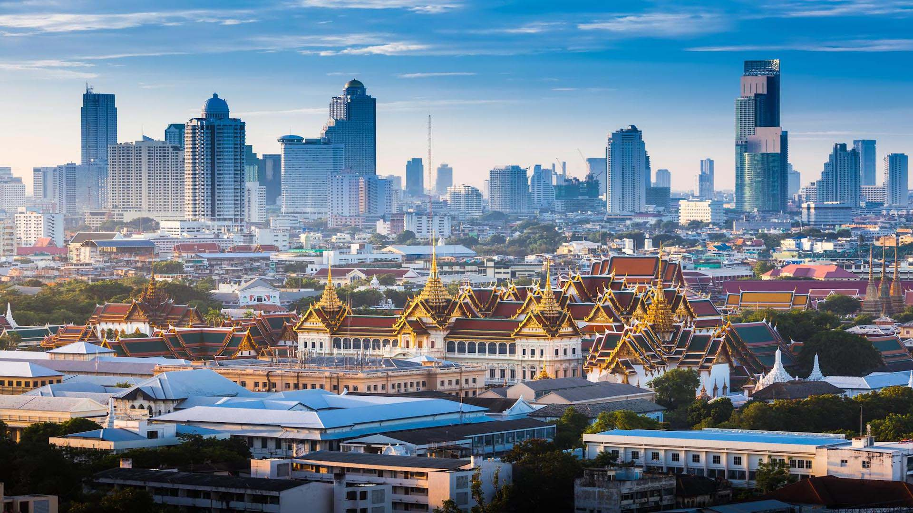

Travel Guide

top 5 best countries to visit
 Click here for more about the country(Spain)
Click here for more about the country(Spain)
From Madrid and Barcelona to Valencia and Seville when it comes to must-see places in Spain, we really are spoiled for choice in Spain. The vibrant cities of Madrid and Barcelona are world-renowned for their arts and culture scene, fantastic food, incredible museums and impressive shopping options

1. Spain
2. Italy

Click here for more about the country(Italy)
2. Italy
 Click here for more about the country(Italy)Italy, a European country with a long Mediterranean coastline, has left a powerful mark on Western culture and cuisine. Its capital, Rome, is home to the Vatican as well as landmark art and ancient ruins. Other major cities include Florence, with Renaissance masterpieces such as Michelangelo’s "David" and Brunelleschi's Duomo; Venice, the city of canals; and Milan, Italy’s fashion capital.

New Zealand is an island country in the southwestern Pacific Ocean. It consists of two main landmasses—the North Island and the South Island —and over 700 smaller islands, covering a total area of 268,021 square kilometres.
Click here for more about this country(Newzealand)3.NewZealand
4.THAILAND
Thailand is a Southeast Asian country. It's known for tropical beaches, opulent royal palaces, ancient ruins and ornate temples displaying figures of Buddha. In Bangkok, the capital, an ultramodern cityscape rises next to quiet canalside communities and the iconic temples of Wat Arun , Wat Pho and the Emerald Buddha Temple (Wat Phra Kaew). Nearby beach resorts include bustling Pattaya and fashionable Hua Hin.
Click here for more about this country(Thailand)5.Japan
Click here for more about this country(Japan)
Japan is an island country in East Asia, located in the northwest Pacific Ocean. It is bordered on the west by the Sea of Japan, and extends from the Sea of Okhotsk in the north toward the East China Sea and Taiwan in the south.